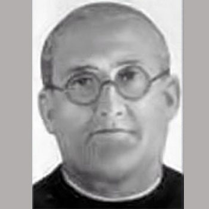

Isusovački blaženici
Svećenik
Bl. Alfred Šimun Colomina
1877. – 1936.
Isusovački svećenik i rektor služio je mladima u Valenciji i Sarriáu. Za građanskoga rata skrivale su ga obitelji, ali je naposljetku uhićen i ubijen.
Tekst je preveden i prilagođen uz pomoć umjetne inteligencije.

Izvor slike
- Spomendan
- 29. studenoga
- Zaštitništvo
- Nije navedeno u izvoru
- Životni vijek
- 1877. – 1936.
- Djelovanje
- Mladi i odgoj · Obrazovanje i poučavanje vjere · Progoni i progonstvo · Mučeništvo
- Razdoblje
- 19., 20. stoljeće
- Mjesto službe
- Valencia i Sarrià, Španjolska
- Datum rođenja
- 08.03.1877.
- Mjesto rođenja
- Valencia, Španjolska
- Datum smrti
- 29.11.1936.
- Mjesto smrti/mučeništva
- Paterna, Valencia, Španjolska
- Okolnosti smrti/mučeništva
- Ubijen tijekom protukatoličkih progona u Španjolskom građanskom ratu.
- Uloga
- Svećenik
- Mučenik
- Da
- Ostale oznake
- Rektor isusovačkih kolegija u Valenciji i Sarriàu
- Pripadnost
- Isusovac
- Drugi oblici imena
- Alfredo Simón Colomina · Alfredo
Životopis
Alfredo Simón Colomina rođen je 1877. u Valenciji, a Družbi Isusovoj pristupio je 1895. Služio je u odgoju mladih: u valencijskome kolegiju San José najprije kao dekan, potom rektor. Godine 1916. preuzeo je rektorstvo u Sarriàu kraj Barcelone, a zatim se vratio u Valenciju na istu službu.
Napad na kolegij 1931. izazvao je višemjesečno zatvaranje škole. Nakon zabrane Družbe Isusove u Španjolskoj 1932. članovi su živjeli raspršeni, ali su nastavljali ograničeni apostolat. Alfredo je ispovijedao i nosio pričest vjernicima. Po izbijanju građanskoga rata 1936. utočište je nalazio kod različitih obitelji. Više je puta uhićen i pušten.
Dopunski hagiografski prikaz navodi zatočenje u Torres de Quart te ponovno uhićenje 27. studenoga i odvođenje u zatvor u nekadašnjem sjemeništu. S drugim je zatočenicima molio krunicu i hrabrio ih. Dana 29. studenoga 1936. izveden je na pogubljenje; prema istome prikazu prije smrti dao je odrješenje drugovima. Pripada jedanaestorici isusovačkih mučenika iz Gandíje i Valencije. Blaženim je proglašen 11. ožujka 2001. Njegovi su posmrtni ostatci 1940. preneseni u isusovačku grobnicu u Valenciji.
Tekst je preveden i prilagođen uz pomoć umjetne inteligencije.
Pročitaj više na izvornoj stranici ↗